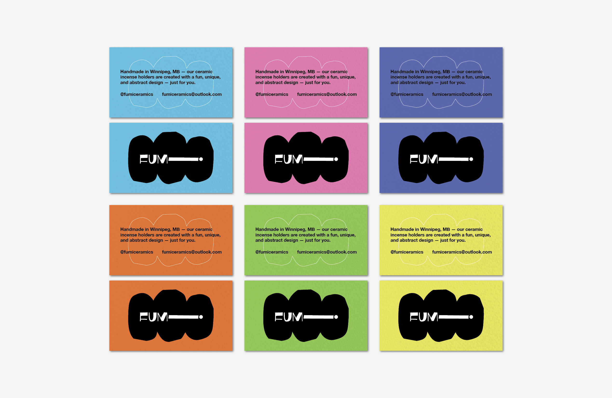
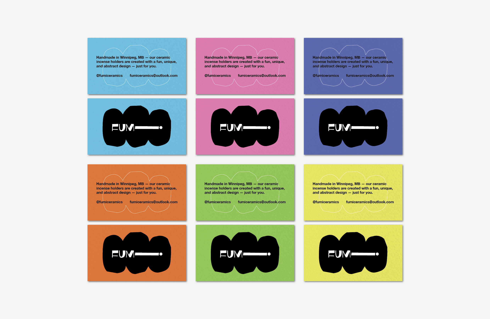

Fumi Ceramics
Identity + Production
Fumi Ceramics is a self-created brand built around its first product — a fun and whimsical incense holder designed with inspiration from abstract décor pieces and modern art. The main goal was to create a product that did not relinquish its form for function. Having an incense holder that could proudly be displayed in your home was of utmost importance. Bold, accenting colours and typography allow for the playful nature of the product to be brought to the foreground while still letting the product be the main focus. With each incense holder handmade and painted here in Winnipeg — you too can own your own personalized Fumi ncense holder! Click “About” and get in touch today.
 
